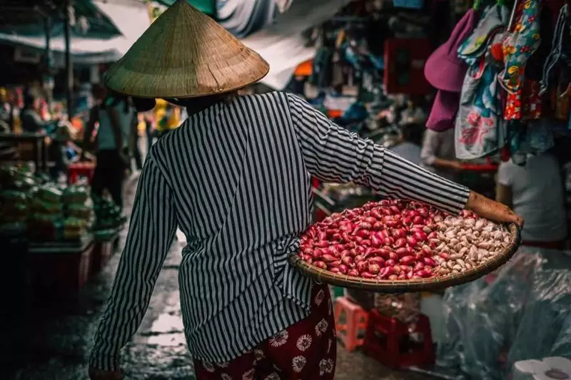
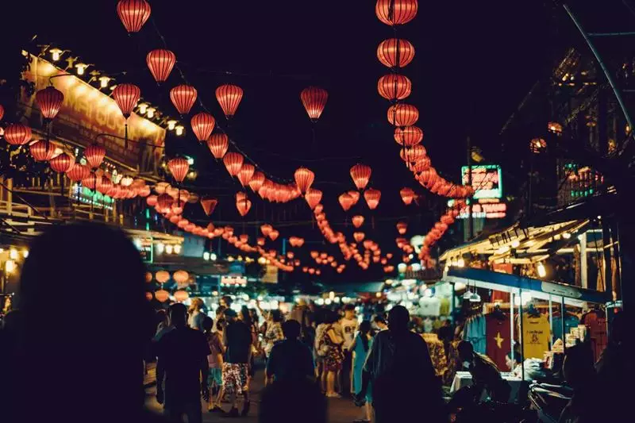
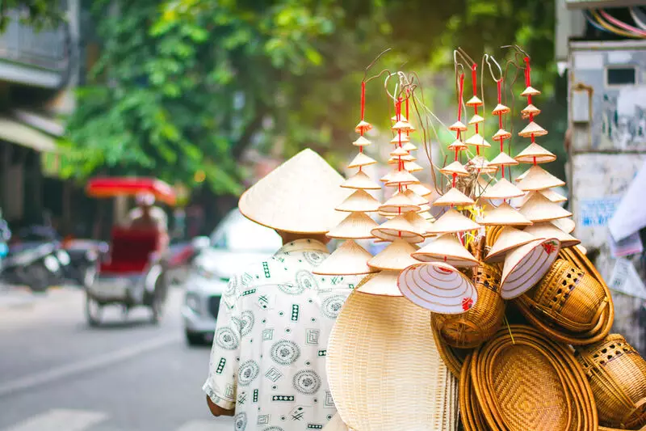
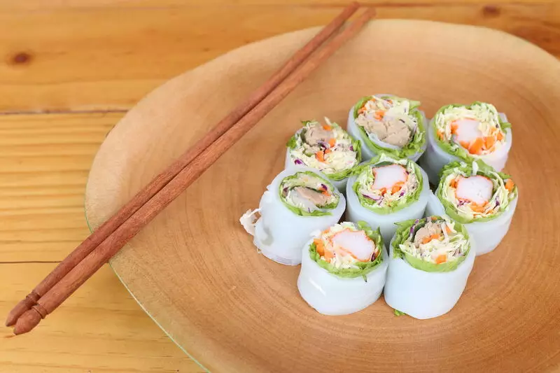
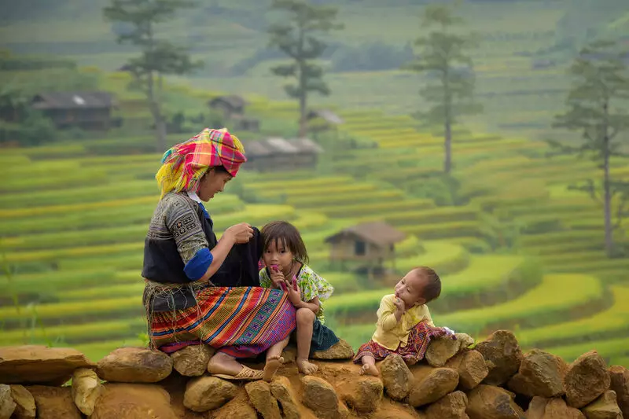

.png)
O traje tradicional vietnamita é conhecido como Ao Dai, uma túnica longa e ajustada, geralmente confeccionada em seda ou algodão, que se estende até os tornozelos. Normalmente, a peça é combinada com calças compridas. Junto com o chapéu vietnamita, usado pelos agricultores, é um dos símbolos mais fortes da cultura do Vietnã. É admirado em todo o mundo, crescendo cada vez mais como um produto de exportação de sucesso.
A cultura vietnamita é profundamente enraizada nas tradições familiares e na reverência aos ancestrais. Todas as festividades vietnamitas são celebradas com reuniões familiares, banquetes tradicionais e rituais que podem envolver desfiles e decorações típicas. Uma celebração muito importante é o Tet Nguyen Dan, o Ano Novo Lunar, comemorado nos quatro primeiros dias de janeiro. Neste período, a população decora as ruas e avenidas com o vermelho tradicional do país (também símbolo da alegria e felicidade) e celebra com muitos fogos de artifício.
A cultura vietnamita também é marcada por sua rica tradição artística, que inclui pintura em seda, escultura em madeira e cerâmica. As antigas cidades imperiais de Hue e Hoi An são famosas por sua arquitetura tradicional bem preservada, enquanto Ho Chi Minh é uma cidade moderna, com diversas manifestações de arte contemporânea. Essas e outras expressões artísticas refletem a identidade cultural do país e proporcionam aos visitantes uma visão fascinante da história e da vida vietnamita.
No Vietnã, os pratos mais comuns envolvem molho de peixe, arroz, pasta de camarão, limão, pimenta, canela vietnamita e muitas ervas e legumes frescos. Com pouco uso de óleo em seus pratos, é considerada uma das cozinhas mais saudáveis do mundo. Pratos como o Pho, uma sopa de macarrão de arroz com carne e ervas aromáticas, o Canh Chua, uma sopa de ervas e legumes, o Go Cuon, rolinhos de arroz e legumes, e o Banh Mi, um sanduíche feito com baguete e recheios como carne, picles e coentro, são alguns exemplos da rica culinária do país.
A cultura vietnamita é muito centrada na família, no respeito aos mais velhos e na forma como a família é estruturada. Todos do grupo familiar devem trabalhar em conjunto para superar os desafios e garantir o bem-estar de todos. Um aspecto curioso em relação às tradições familiares é que é comum que os vietnamitas morem com os pais até se casarem e mesmo depois disso. Também é tradição que os filhos cuidem dos pais na velhice. Além disso, no Vietnã, as relações familiares são consideradas mais importantes do que as relações de amizade ou profissionais, e é comum que decisões importantes sejam tomadas em consulta com os membros da família.
